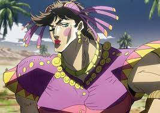
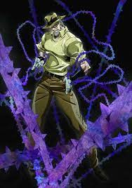
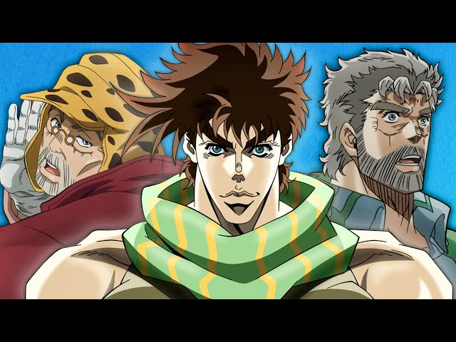
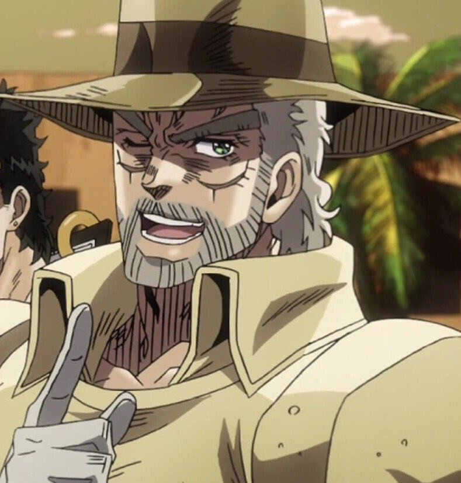

Джозеф Джостар - це головний протагоніст другої частини серії Неймовірні пригоди ДжоДжо, Бойове прагнення, а також другий ДжоДжо в серії. Він також з'являється як основний союзник у Хрестоносцях зоряного пилу, і другорядного союзника в Незламному алмазі.
Онук Джонатана Джостара, Джозеф – природжений користувач Хамона і, зрештою, користувач Стенда, який володіє екстрасенсорним фотографічним стендом, Hermit Purple. Буйний правопорушник з винятковим талантом до хитрості, Джозеф з ініціативою та вражаючою винахідливістю протистоїть фантастичним загрозам, що підступають до нього протягом усього життя, борючись із вампірами, Людьми з колон та ворожими користувачами стендів.
Джозеф - другий ДжоДжо, що найчастіше з'являється в серії після свого онука Джотаро Куджо. Він також є батьком Джоске Хігашикати, головного протагоніста Незламного алмазу.
Hermit Purple

Цей неназваний стенд, що належить трупу Джонатана Джостара і використовує ДІО, з'являється в третій частині серії Неймовірні пригоди ДжоДжо, Хрестоносці зоряного пилу. Це стенд, схожий на Hermit Purple Джозефа і що має схожі здібності. ДІО використовує цю силу, щоб відстежувати групу Джостара протягом усієї їхньої подорожі.
Стенд ідентичний Hermit Purple у зовнішності, з'являючись у вигляді безлічі покритих шипами лоз, які виходять з рук ДІО.
Подібно до Hermit Purple, він може створювати спіритичні фотографії, ударивши по камері (проте, примітно те, що камера не знищується, на відміну від способу Джозефа, натякаючи, що це може бути ефективніша версія Hermit Purple, або Джозеф просто вкладає в це занадто багато зусиль порівняно з ДІО). ДІО використовував цю техніку, щоб відстежувати нинішнє місце розташування Джостарів та їхніх друзів, щоб відправляти за ними користувачів стендів. ДІО також може використовувати свою силу, щоб перервати спіритичне пророцтво Hermit Purple, ввнаслідок чого, телевізор, який Джозеф використав був знищений. Цей стенд також здатний показувати зображення, яке присутнє в чиємусь серці через кришталеву кулю. ДІО використав її, щоб показати Польнареффу один образ Джей Гайла, оскільки воно уособлювало біль, який Польнарефф відчував у своєму серці. Той факт, що ця версія Hermit Purple виявилася в тілі Джонатана, може пояснити, чому Джозеф також має Hermit Purple.
Поряд з активацією його власного стенду The World було заявлено, що прекогнітивні здібності ДІО походять від схожого на Hermit Purple стенда, який прокинувся в тілі Джонатана.
Історія

Головний герой 2 частини історії та один з головних — у 3 частини та другорядний персонаж у 4 частини. Він онук Джонатана Джостара. Його батько загинув, а мати втекла після вбивства військового. Відомо, що батько народився незадовго після смерті Джонатана, а мати була підібрана Еріною ще немовлям під час аварії корабля. Може як і дід використовувати Хамон, дуже проникливий і розважливий, майже завжди передбачає дії супротивника. Після того, як Спідуагон повідомляє про жертви в Мексиці від таємничої людини з колони, Джозеф зазнає нападу вампіра, але перемагає його.Він вирушає до Мексики і виявляє підземний об'єкт, де нацисти намагаються відродити людину, яка була заточена в кам'яний стовп понад 2000 років тому. Після відродження людина з колони вбиває всіх людей, проте зазнає поразки від Джозефа. Пізніше Джозеф вирушає до Риму, де було виявлено ще «3 особи з колони» Вам, Есідісі та Карс. Виявляється, вони створили колись кам'яні маски. Джозеф починає тренуватися з техніки Хамон у Цезаря Цепелі, онука Антоніо Цепелі. Пізніше він обіцяв людям з колони, що обов'язково стане

сильнішим, і Ейсідісі помістив йому вгорло кільце, що робить і Вам, але поміщає його над серцем, які уб'ють його через місяць, якщо він не переможе їх і не дістане протиотрути на кільці Ейсідісі та Вама. Зрештою, Джозеф перемагає всіх людей з колони, проте позбавляється лівої руки.
За шість років до подій Stardust Crusaders переїхав тимчасово жити в Японію, де коротко вступив у роман з Томоко Хігасігатою, в результаті якої народився позашлюбний син від Джозефа — Дзесуке.
У 3 частині Stardust Crusaders Джозефу вже 69 років, але він все ще сповнений сил, через пробудження Діо набуває стенду, потім витягує Детаро з в'язниці, допомагає йому зрозуміти свою силу і перемогти Діо. Виявляється на якийсь час убитим, коли Діо поранить Джозефа і висмоктує його кров, але згодом через переливання крові поваленого Діо повернувся до життя.
У 1999 році Джозеф прибуває в Моріо, вперше знайомиться зі своїм сином і випадково знаходить цілком невидиму новонароджену дівчинку, яка володіє стендом Achtung Baby і, не знайшовши її батьків, вирішує удочерити, назвавши Сідзукою Джостар.